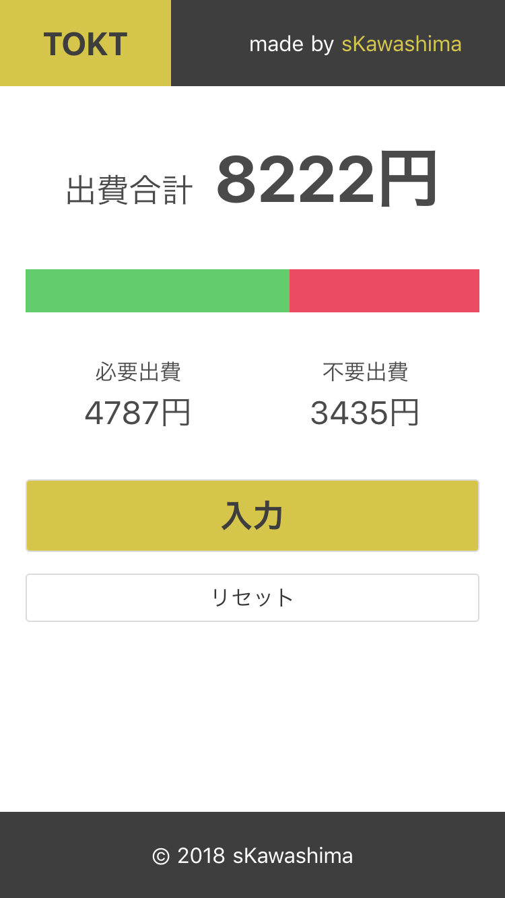
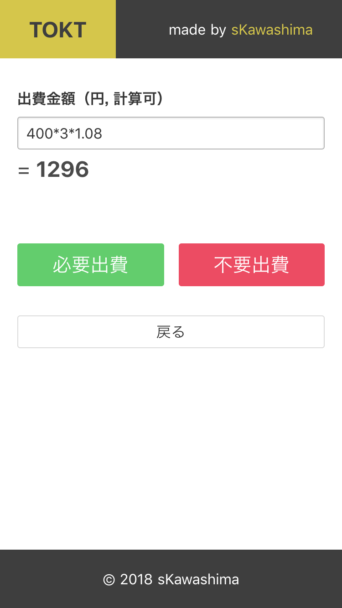

<!DOCTYPE html>
<html>
<head>
  <meta charset="utf-8">
  
  
  <title>1日でオフラインでも動作する家計簿Webアプリを作った話 | sKawashima&#39;s blog</title>
  <meta name="viewport" content="width=device-width,initial-scale=1,maximum-scale=1">
  <meta name="description" content="先日、以前から知り合いで最近交流が活発になった後輩のyamaken君がワードウルフのiOSアプリを公開しました。  非常にめでたい。ぜひぜひ、DLして遊んであげて下さい。 で、ノリと雰囲気でそのアプリのデザインレビューをやってたんですが、その後輩からふと、 yamaken「あれ？先輩はアプリとか作らないんですか？」 と言われてしまいまして。スマートフォン用のネイティブアプリ（いわゆる普通のアプリ）">
<meta name="keywords" content="PWA,Nuxt,Bulma,localForage">
<meta property="og:type" content="article">
<meta property="og:title" content="1日でオフラインでも動作する家計簿Webアプリを作った話">
<meta property="og:url" content="http://skawashima.com/2018/04/10/1日でオフラインでも動作する家計簿Webアプリを作った話/index.html">
<meta property="og:site_name" content="sKawashima&#39;s blog">
<meta property="og:description" content="先日、以前から知り合いで最近交流が活発になった後輩のyamaken君がワードウルフのiOSアプリを公開しました。  非常にめでたい。ぜひぜひ、DLして遊んであげて下さい。 で、ノリと雰囲気でそのアプリのデザインレビューをやってたんですが、その後輩からふと、 yamaken「あれ？先輩はアプリとか作らないんですか？」 と言われてしまいまして。スマートフォン用のネイティブアプリ（いわゆる普通のアプリ）">
<meta property="og:locale" content="ja">
<meta property="og:image" content="http://skawashima.com/2018/04/10/1日でオフラインでも動作する家計簿Webアプリを作った話/main.png">
<meta property="og:image" content="http://skawashima.com/2018/04/10/1日でオフラインでも動作する家計簿Webアプリを作った話/input.png">
<meta property="og:updated_time" content="2018-04-10T05:17:16.526Z">
<meta name="twitter:card" content="summary">
<meta name="twitter:title" content="1日でオフラインでも動作する家計簿Webアプリを作った話">
<meta name="twitter:description" content="先日、以前から知り合いで最近交流が活発になった後輩のyamaken君がワードウルフのiOSアプリを公開しました。  非常にめでたい。ぜひぜひ、DLして遊んであげて下さい。 で、ノリと雰囲気でそのアプリのデザインレビューをやってたんですが、その後輩からふと、 yamaken「あれ？先輩はアプリとか作らないんですか？」 と言われてしまいまして。スマートフォン用のネイティブアプリ（いわゆる普通のアプリ）">
<meta name="twitter:image" content="http://skawashima.com/2018/04/10/1日でオフラインでも動作する家計簿Webアプリを作った話/main.png">
  
    <link rel="alternate" href="/blog/atom.xml" title="sKawashima&#39;s blog" type="application/atom+xml">
  
  
    <link rel="icon" href="/favicon.png">
  
  
    <link href="//fonts.googleapis.com/css?family=Source+Code+Pro" rel="stylesheet" type="text/css">
  
  <link rel="stylesheet" href="/blog/css/style.css">
</head></html>
<body id="barba-wrapper">
  <div id="container" class="barba-container">
    <div id="wrap">
      <header id="header">
  <div id="banner"></div>
  <div id="header-outer" class="outer">
    <div id="header-title" class="inner">
      <h1 id="logo-wrap">
        <a href="/blog/" id="logo">sKawashima&#39;s blog</a>
      </h1>
      
        <h2 id="subtitle-wrap">
          <a href="/blog/" id="subtitle">真面目な方のブログです。</a>
        </h2>
      
    </div>
    <div id="header-inner" class="inner">
      <nav id="main-nav">
        <a id="main-nav-toggle" class="nav-icon"></a>
        
          <a class="main-nav-link" href="/blog/">Home</a>
        
          <a class="main-nav-link" href="/blog/archives">Archives</a>
        
      </nav>
      <nav id="sub-nav">
        
          <a id="nav-rss-link" class="nav-icon" href="/blog/atom.xml" title="RSSフィード"></a>
        
        <a id="nav-search-btn" class="nav-icon" title="検索"></a>
      </nav>
      <div id="search-form-wrap">
        <form action="//google.com/search" method="get" accept-charset="UTF-8" class="search-form"><input type="search" name="q" class="search-form-input" placeholder="Search"><button type="submit" class="search-form-submit">&#xF002;</button><input type="hidden" name="sitesearch" value="http://skawashima.com"></form>
      </div>
    </div>
  </div>
</header>
      <div class="outer">
        <section id="main"><article id="post-1日でオフラインでも動作する家計簿Webアプリを作った話" class="article article-type-post" itemscope itemprop="blogPost">
  <div class="article-meta">
    <a href="/blog/2018/04/10/1日でオフラインでも動作する家計簿Webアプリを作った話/" class="article-date">
  <time datetime="2018-04-09T15:57:21.000Z" itemprop="datePublished">2018-04-10</time>
</a>
    <div class="article-category">
    <a class="article-category-link" href="/blog/categories/Web-Frontend/">Web Frontend</a>
  </div>
  </div>
  <div class="article-inner">
    
    
      <header class="article-header">
        <h1 class="article-title" itemprop="name">
      1日でオフラインでも動作する家計簿Webアプリを作った話
    </h1>
      </header>
    
    <div class="article-entry" itemprop="articleBody">
      
        <p>先日、以前から知り合いで最近交流が活発になった後輩の<strong>yamaken</strong>君が<strong>ワードウルフのiOSアプリを公開</strong>しました。</p>
<div class="twitter-wrapper"><blockquote class="twitter-tweet"><a href="https://twitter.com/yamakentoc/status/979295582479990785" target="_blank" rel="noopener"></a></blockquote></div><script async defer="defer" src="//platform.twitter.com/widgets.js" charset="utf-8"></script>
<p>非常にめでたい。ぜひぜひ、DLして遊んであげて下さい。</p>
<p>で、ノリと雰囲気でそのアプリのデザインレビューをやってたんですが、その後輩からふと、</p>
<p><strong>yamaken「あれ？先輩はアプリとか作らないんですか？」</strong></p>
<p>と言われてしまいまして。<br>スマートフォン用の<strong>ネイティブアプリ</strong>（いわゆる普通のアプリ）に関しては、デザインはやったことがあるけど実装はしたこと無いし、やってみるとしたらWebアプリかなあとか考えながら調べていたところ、<strong>PWA</strong> というえげつないしくみの存在を知ってしまいました。</p>
<a id="more"></a>
<h2><span id="pwaprogressive-web-application">PWA(Progressive Web Application)</span></h2><p>いきなりアルファベットばっかり出てきてもアレなので、普通のWebアプリ/Webサイトとの違いをざっくり並べてしまいます。</p>
<ul>
<li><strong>オフラインでも動作</strong>する</li>
<li>スマートフォンのブラウザアプリで<strong>「ホームに追加」すると単体のアプリのように動作</strong>できる<ul>
<li>でも、実際はブラウザ機能を利用するので<strong>容量は非常に軽い</strong></li>
</ul>
</li>
<li>プッシュ通知などの通知、電話の発信など、これまで<strong>ネイティブアプリ”ならでは”だった機能が実装できる</strong></li>
</ul>
<p><strong>すごくない？？？すごい！！！</strong>ということで、勉強してみました。<br>ものすごく単純化して言うと、従来の<strong>キャッシュ</strong>に当たるローカルストレージを<strong>発達したJavaScriptとブラウザAPIを駆使して厳密に管理</strong>し、<strong>Webサイト,アプリをまるごとキャッシュ</strong> すると同時に、ネイティブアプリぽい動作を<strong>ブラウザAPI</strong>で担えるようにしてしまえ、と言うものです。</p>
<p>最近は、作りたいものがあったのでWebのバックエンドを裏でコツコツ作ってましたが、その影響で長い間目に見える成果物のアウトプットがなかったため、<strong>短期間で簡単なアウトプットを出す</strong> には良い機会で、かつ<strong>作りたいものリスト</strong>の中にちょうどいい題材があったため、2018年4月9日、<strong>思い至って作ってみました</strong>。寝るまでに完成させることが自分に与える規約でしたね（何でこの時期に一人ハッカソンみたいなことしてんのみたいなツッコミは無しで）。</p>
<hr>
<h2><span id="作ったものtokt">作ったもの「TOKT」</span></h2><p><a href="https://skawashima.github.io/keepTrack/" target="_blank" rel="noopener">Two Options Keep Track</a><br>（タイトル命名が酷く雑だ）</p>
<p>今までいろんな家計簿アプリを使ってきましたが、<strong>システムがガッチガチ</strong> 過ぎて<strong>１日でも抜けてしまうとやめちゃいたくなる</strong>現象が起きていました。1日抜けてしまうと、スタンプボードみたいなのに抜けが発生して嫌になり、嫌になって放置してから帰ってきても以前のデータが残っていて億劫になる…。経験ありませんか？<br>この <strong>「TOKT」</strong> は、「機能・入力に必要な情報を<strong>シンプル</strong>(Two Options)にし、かつ<strong>柔軟な使い方</strong>ができるようにすることで、<strong>入力の手間</strong> による離脱を抑え、<strong>離脱からの復帰</strong> がしやすくなり、家計簿をつけ続けられる」という流れを意識して機能を考えた家計簿アプリです。</p>
<p>記事タイトルにもなっているとおり、<strong>一度アクセスして表示してしまえば、たとえ機内モードにしても動作します</strong>。もし使って頂ける方がいれば、<strong>「ホームに追加」</strong> もしてみて下さい。少なくともアンドロイドなら、iOSでも新しめのバージョンならネイティブアプリっぽく動く…はずです。</p>
<h3><span id="アプリ紹介とこだわり">アプリ紹介とこだわり</span></h3><p></p>
<p><strong>ユーザーが「必要な出費」か「不要な出費(=無駄遣い)」かを判断</strong> しながら出費を入力すると、<strong>それぞれの値段と割合が可視化</strong> されます。また、ユーザーは<strong>任意のタイミングでリセット</strong> することも出来ます。</p>
<p><br>さらに、<strong>入力画面ではテキストボックスに数式を入力できます</strong>。複数のレシートを別々に入力することは時間の浪費と考え、直接計算できるようにしました。</p>
<p>…改めて見ると<strong>UIデザインが酷い</strong>ですね。特に入力画面は時間あれば修正します。</p>
<p>実は、TOKTを通して<strong>ちょっとでも多くの人にPWAを知ってもらえたら満足</strong>だったりします。まだあまり流行ってませんが、<strong>いつ爆発してもおかしくない技術</strong> だと勝手に思ってますよ。まあ、みんな使い始めると今度はローカルストレージの容量に問題が生まれそうで怖いですけど。</p>
<h2><span id="開発環境">開発環境</span></h2><p><a href="https://github.com/sKawashima/keepTrack" target="_blank" rel="noopener">GitHub リポジトリ</a></p>
<p>プルリクにまともに文字を書いてなかったりとか、焦りがハッキリ見えたりします。</p>
<p>使ったライブラリはこんな感じです。全部npmライブラリです。</p>
<ul>
<li><strong>Nuxt</strong>: Vueのフレームワーク。滑らかなページ遷移はこいつのおかげ。<ul>
<li><strong>Vue</strong>: 変数の内容を表示内容に対応させるライブラリ。計算結果やグラフ表示に乱用。</li>
<li><strong>Vuex</strong>: ページ遷移しながらデータを保持するためのVue用ライブラリ。</li>
<li><strong>@nuxtjs/pwa</strong> NuxtでPWAを作るためのライブラリ。”厳密なキャッシュ管理”のほとんどをやってくれた。</li>
</ul>
</li>
<li><strong>Bulma</strong>: CSSフレームワーク。使ってみようと思ったけど結局ボタンくらいしか使っていない。</li>
<li><strong>localForage</strong>: ローカルストレージに仮想的なDBを構築する。閉じたりリロードしたりしてもデータを保持できる。</li>
</ul>
<h3><span id="嵌ったポイント">嵌ったポイント</span></h3><p>Vuexを用いたページ間のデータ保持とか、滑らかなページ遷移とか、データバインディングとかは、経験したことがあったためそれなりにサラサラ書けました。</p>
<p>が、<strong>ローカルストレージに意図的にデータを格納し、それを呼び出すような処理</strong> は使う技術の発見からガッツリ嵌ってました。具体的には、@nuxtjs/pwaで利用している<strong>Cache API</strong>を一部直書きして使おうとしてもよく分からず、頭を抱えながらCache APIよりも確実なデータ保持ができるという<strong>IndexedDB</strong>に結構な時間をかけて到達し、でも書き方がややこしくて頭を抱え、最終的にIndexedDBを簡単に書くための<strong>localForage</strong>に行き着いた、という感じになります。<a href="http://neos21.hatenablog.com/entry/2017/11/01/080000" target="_blank" rel="noopener">この記事</a>に出会っていなければ完成していたかどうか…</p>
<p>普段はWebページを作ることはあってもアプリケーションは滅多に作らないので、<strong>VuexとlocalForageのデータのやり取り</strong> や<strong>JavaScriptの処理順の入れ替わり</strong>などに苦しめられました。しかし、JavaScriptに慣れてきた影響で今抱えているWebサイト制作案件では<strong>それなりに柔軟にいろんな挑戦が出来ている</strong>ので、<strong>技術を身につけるのも悪くない</strong> なと思っております。</p>
<h2><span id="最後に">最後に</span></h2><p>なんかこう、最近は<strong>技術的なものづくりは頻繁にやってる</strong>のに<strong>デザイン、アート的なことはスランプ気味</strong>になっていてちょっとつらいです。久しぶりにガッツリ音楽に時間を割きたい…と思ったら<strong>学校始まってる</strong>し、どうしたものか。時間が足りない！！</p>
<p>といいつつ、<strong>4/22にちょっとアート的に大暴れする予定がある</strong> ので、無理にでも作曲に時間を割こうと思っています。今の自分の環境は本当に恵まれてるので、<strong>出来る限りのことをやるとします</strong>。ではまた！</p>
<h3><span id="追伸">追伸</span></h3><p>流石に、そろそろこのブログのテンプレートを真面目に弄ったほうが良いなって思いました。（研究には関係のない）作りたいものとやりたいことが無限に増える日々、悪くないです。</p>
      
    </div>
    <footer class="article-footer">
      <a data-url="http://skawashima.com/2018/04/10/1日でオフラインでも動作する家計簿Webアプリを作った話/" data-id="cjwt9n6cl0001jfp97ui8g3od" class="article-share-link">共有</a>
      
      <ul class="article-tag-list"><li class="article-tag-list-item"><a class="article-tag-list-link" href="/blog/tags/Bulma/">Bulma</a></li><li class="article-tag-list-item"><a class="article-tag-list-link" href="/blog/tags/Nuxt/">Nuxt</a></li><li class="article-tag-list-item"><a class="article-tag-list-link" href="/blog/tags/PWA/">PWA</a></li><li class="article-tag-list-item"><a class="article-tag-list-link" href="/blog/tags/localForage/">localForage</a></li></ul>
    </footer>
  </div>
  
    <nav id="article-nav">
  
    <a href="/blog/2018/05/19/初めてハッカソンに出場して考えたこと/" id="article-nav-newer" class="article-nav-link-wrap no-barba">
      <strong class="article-nav-caption">次の記事</strong>
      <div class="article-nav-title">
        
          初めてハッカソンに出場して考えたこと
        
      </div>
    </a>
  
  
    <a href="/blog/2018/04/05/Markdownで記述するブログを作ろうとして行き着いたもの/" id="article-nav-older" class="article-nav-link-wrap no-barba">
      <strong class="article-nav-caption">前の記事</strong>
      <div class="article-nav-title">Markdownで記述するブログを作ろうとして行き着いたもの</div>
    </a>
  
</nav>
  
</article></section>
        
          <aside id="sidebar">
  
    <div class="widget-wrap">
    <h3 class="widget-title">最近の投稿</h3>
    <div class="widget">
      <ul>
        
          <li>
            <a href="/blog/2018/10/29/二度目のハッカソンで感じたこと/">二度目のハッカソンで感じたこと</a>
          </li>
        
          <li>
            <a href="/blog/2018/05/19/初めてハッカソンに出場して考えたこと/">初めてハッカソンに出場して考えたこと</a>
          </li>
        
          <li>
            <a href="/blog/2018/04/10/1日でオフラインでも動作する家計簿Webアプリを作った話/">1日でオフラインでも動作する家計簿Webアプリを作った話</a>
          </li>
        
          <li>
            <a href="/blog/2018/04/05/Markdownで記述するブログを作ろうとして行き着いたもの/">Markdownで記述するブログを作ろうとして行き着いたもの</a>
          </li>
        
      </ul>
    </div>
  </div>
  
    <div class="widget-wrap">
    <h3 class="widget-title">カテゴリ</h3>
    <div class="widget">
      <ul class="category-list"><li class="category-list-item"><a class="category-list-link" href="/blog/categories/Hackathon/">Hackathon</a></li><li class="category-list-item"><a class="category-list-link" href="/blog/categories/Web-Frontend/">Web Frontend</a></li></ul>
    </div>
  </div>
  
    <div class="widget-wrap">
    <h3 class="widget-title">タグ</h3>
    <div class="widget">
      <ul class="tag-list"><li class="tag-list-item"><a class="tag-list-link" href="/blog/tags/kie/">!kie</a></li><li class="tag-list-item"><a class="tag-list-link" href="/blog/tags/Blog/">Blog</a></li><li class="tag-list-item"><a class="tag-list-link" href="/blog/tags/Bulma/">Bulma</a></li><li class="tag-list-item"><a class="tag-list-link" href="/blog/tags/Hexo/">Hexo</a></li><li class="tag-list-item"><a class="tag-list-link" href="/blog/tags/JPHACKS2018/">JPHACKS2018</a></li><li class="tag-list-item"><a class="tag-list-link" href="/blog/tags/Markdown/">Markdown</a></li><li class="tag-list-item"><a class="tag-list-link" href="/blog/tags/Nuxt/">Nuxt</a></li><li class="tag-list-item"><a class="tag-list-link" href="/blog/tags/PWA/">PWA</a></li><li class="tag-list-item"><a class="tag-list-link" href="/blog/tags/SPAJAM2018/">SPAJAM2018</a></li><li class="tag-list-item"><a class="tag-list-link" href="/blog/tags/UI-UXデザイン/">UI/UXデザイン</a></li><li class="tag-list-item"><a class="tag-list-link" href="/blog/tags/localForage/">localForage</a></li><li class="tag-list-item"><a class="tag-list-link" href="/blog/tags/ハッカソン/">ハッカソン</a></li><li class="tag-list-item"><a class="tag-list-link" href="/blog/tags/企画提案/">企画提案</a></li></ul>
    </div>
  </div>
  
    <div class="widget-wrap">
    <h3 class="widget-title">タグクラウド</h3>
    <div class="widget tagcloud">
      <a href="/blog/tags/kie/" style="font-size: 20px">!kie</a> <a href="/blog/tags/Blog/" style="font-size: 10px">Blog</a> <a href="/blog/tags/Bulma/" style="font-size: 10px">Bulma</a> <a href="/blog/tags/Hexo/" style="font-size: 10px">Hexo</a> <a href="/blog/tags/JPHACKS2018/" style="font-size: 10px">JPHACKS2018</a> <a href="/blog/tags/Markdown/" style="font-size: 10px">Markdown</a> <a href="/blog/tags/Nuxt/" style="font-size: 10px">Nuxt</a> <a href="/blog/tags/PWA/" style="font-size: 10px">PWA</a> <a href="/blog/tags/SPAJAM2018/" style="font-size: 10px">SPAJAM2018</a> <a href="/blog/tags/UI-UXデザイン/" style="font-size: 20px">UI/UXデザイン</a> <a href="/blog/tags/localForage/" style="font-size: 10px">localForage</a> <a href="/blog/tags/ハッカソン/" style="font-size: 20px">ハッカソン</a> <a href="/blog/tags/企画提案/" style="font-size: 20px">企画提案</a>
    </div>
  </div>
  
    <div class="widget-wrap">
    <h3 class="widget-title">アーカイブ</h3>
    <div class="widget">
      <ul class="archive-list"><li class="archive-list-item"><a class="archive-list-link" href="/blog/archives/2018/10/">10月 2018</a></li><li class="archive-list-item"><a class="archive-list-link" href="/blog/archives/2018/05/">5月 2018</a></li><li class="archive-list-item"><a class="archive-list-link" href="/blog/archives/2018/04/">4月 2018</a></li></ul>
    </div>
  </div>
  
</aside>
        
      </div>
      <footer id="footer">
  
  <div class="outer">
    <div id="footer-info" class="inner">
      &copy; 2019 sKawashima
    </div>
  </div>
</footer>
    </div>
    <nav id="mobile-nav">
  
    <a href="/blog/" class="mobile-nav-link">Home</a>
  
    <a href="/blog/archives" class="mobile-nav-link">Archives</a>
  
</nav>
    <script src="//ajax.googleapis.com/ajax/libs/jquery/2.0.3/jquery.min.js"></script>


  <link rel="stylesheet" href="/blog/fancybox/jquery.fancybox.css">
  <script src="/blog/fancybox/jquery.fancybox.pack.js"></script>


<script src="/blog/js/script.js"></script>
<script src="/blog/js/barba.min.js"></script>
<!-- <script type="text/javascript">
  window.onload = () => {
    Barba.Pjax.start();
  }
</script> -->
  </div>
</body>
